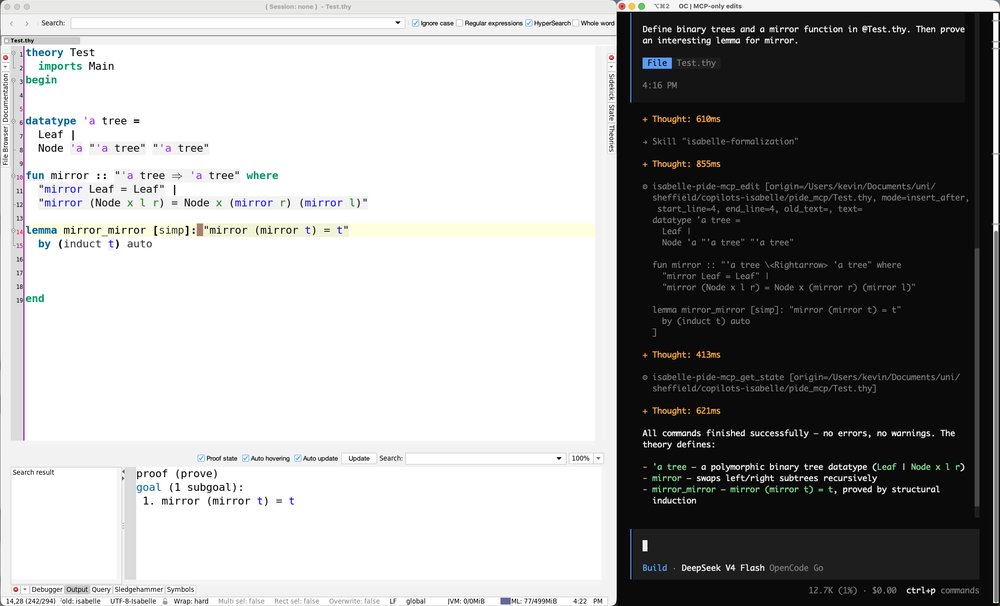

Quick Start
How to let an AI agent prove a theorem and have it formally checked by Isabelle. No prior Isabelle experience required.
01 Install the basic ingredients
Already have a coding agent? The easiest option is to ask it to install Isabelle and PIDE MCP for you:
Prompt for your agent
Follow the README at https://github.com/kappelmann/isabelle-pide-mcp to set up Isabelle's latest release and PIDE MCP
The PIDE MCP README contains instructions for all platforms and several coding agents. To check that your setup is working, confirm that PIDE MCP appears among the connected MCP servers in your coding agent and that the Isabelle skills are available:
> /mcp # isabelle-pide-mcp, connected
> /skills # the Isabelle skills> /mcp # isabelle-pide-mcp, connectedCodex has no documented command for listing skills. Check that the skill folders were copied, or ask your agent to verify it.
> /mcp # isabelle-pide-mcp, connected
> /skills # the Isabelle skillsIf anything is missing, ask your agent to compare its logs and configuration with the README.
02 How they work together
The AI agent works on the proof. PIDE MCP connects it to Isabelle, which checks every proof step.
03 Write your first goal
Open Isabelle/jEdit or Isabelle/VSCode, either by opening the Isabelle application or via the command line:
$ isabelle jedit # or: isabelle vscode
The first time, this will build Isabelle's HOL session. In the editor, create a new file
called Scratch.thy with the following content:
theory Scratch
imports Main
begin
lemma "(∑i<n. 2*i+1) = (n::nat)^2"
sorry
end
Save the file. Note that sorry marks a proof that is still missing.
04 Let the agent prove it
Then, open your coding agent beside the editor.
Tell your agent to find the proof:
Prompt for your agent
Finish the proof in Scratch.thy
Your agent will interact with PIDE MCP several times as it searches for a proof. It will
start a session (likely HOL), read the document, edit it, and check for success. And
that's it: your first agentic proof! You should see its changes live in your editor. If
not, press F5 to reload.
Below, you can find an example interaction and side-by-side setup using Isabelle/jEdit and OpenCode.

05 Work together without collisions
Your editor and AI agent use separate PIDE sessions and synchronise through the file system. Keep the following in mind while interacting on the same files as your agent:
- Save and reload. Save to hand over your work and reload to see what came back if necessary.
- Avoid concurrent edits. Two simultaneous edits can conflict with each other. If you want to work in parallel, it is easier to use different files.
06 Where to go next
You now have the whole loop: you choose the problem, your agent works on the proof, and Isabelle checks the result. You can use the same workflow for a larger task: a paper, a book chapter, or a collection of statements you have been meaning to formalize. If you want to know more about Isabelle or the available PIDE MCP tools, just ask your agent 🙂
Now take on what seemed out of reach.
- Mathematical discovery Autoformalization of classic results, and long-standing arguments settled for good.
- Verified software Verified compilers, kernels, controllers that do the right thing and the right thing only.
- Security and cryptography Protocol and cryptographic guarantees checked down to the axioms.
- Living libraries Large formal libraries ported, refactored, and repaired while everything underneath keeps moving.